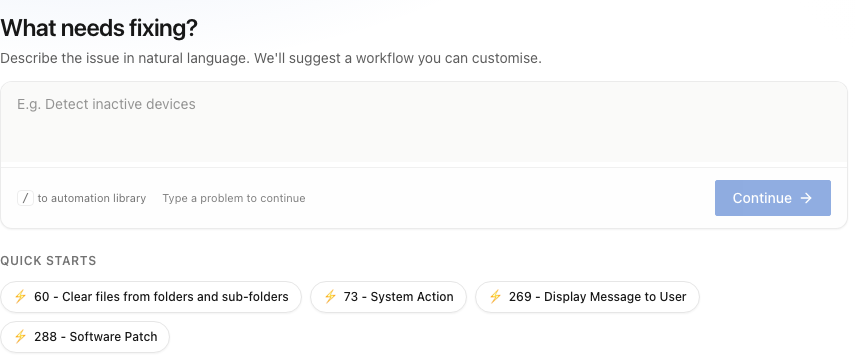
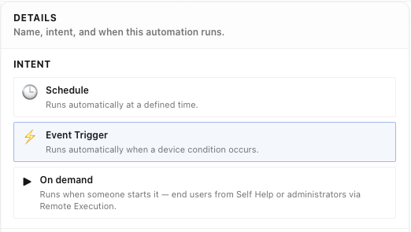

Home / Platform / Workflows & natural language
Workflows & natural language
Describe the task. Don’t build it.
The people who know what needs automating are rarely the people who can build it. That gap is the reason automation backlogs exist, and closing it is worth more than any individual workflow in the queue.
The issue
The backlog isn’t a list of ideas. It’s a list of things waiting for an engineer.
What normally happens
A request, then a queue.
A service-desk lead knows exactly which repetitive task should be automated. They raise a request. It joins a backlog behind work with a bigger business case, and by the time it is picked up the details have changed. Most of what should be automated is never refused — it is just never reached.
What Nanoheal does
The person who knows, writes it.
They describe the task in plain English. The context layer resolves it against the engine's capabilities and compiles a workflow. IT validates it once. No engineering ticket is ever raised.
01 — Authoring
Plain language in. Sealed capability out.
Intelligence reads the description, resolves it against what the engine can do and what the context layer knows about your estate, and produces a workflow with its parameters, conditions and failure handling made explicit for review.
Worth being precise about what does not happen: no code is generated. The output is knowledge against a fixed, signed capability set. That is what makes it reviewable by someone who doesn't write PowerShell, and what means it doesn't rot when the estate moves underneath it.
If the output were generated code, you would have moved the engineering problem rather than removed it — and inherited code nobody wrote but somebody still maintains.

02 — Triggering
Four ways the same workflow starts.
In the console this is a single choice on the workflow’s Details step — three intents that cover four operational patterns, because a symptom and a forecast arrive through the same door.
| Trigger | Starts when | Set in the builder as | Typical use |
|---|---|---|---|
| Symptom | The OS reports the condition — event, service state, crash, error | Event trigger | Autoheal, before anyone notices |
| Forecast | Prediction or anomaly detection flags a condition building | Event trigger | Prevention — the ticket never exists |
| Request | An employee, a service-desk agent or an IT agent asks | On demand | Self Help and Remote Execution |
| Schedule or policy | A window, a compliance obligation, a drift threshold | Schedule | Patch rings, policy enforcement, routine tasks |
An event trigger is bound to a named condition the operating system already publishes — a Windows event, a service state, a disk or memory threshold — with a comparison and a value. Nothing is deployed to the endpoint to watch for it, because the endpoint is already reporting it.
One authored workflow serves all four rows. This is the part that compounds: the effort is spent once and recovered every time the condition recurs, through whichever channel it arrives.

03 — The conversational interface
Ask the estate a question. Then ask it to act.
The context layer already holds DEX signals, ITSM history, CMDB and your SOPs. Natural language is simply the most direct way to interrogate that.
"Which devices are showing the memory pattern that preceded last month's crashes?" is a question. "Fix them" is the next sentence, and it runs through exactly the same guardrails, approvals and attribution as any other execution path — conversational input does not mean relaxed governance.
For the service desk this replaces the runbook. The agent describes the outcome rather than following twelve steps, and the same validated capability runs that would have run unattended.
04 — Validation
Once, by a human, before it is trusted.
Nothing authored this way executes on its own authority. A workflow is reviewed and approved once; it is then compiled, sealed and versioned, and every subsequent execution is attributable to that approved version. Plain-language authoring changes who can propose an automation. It does not change who signs it off.
See a symptom resolve itself.
Bring us your top three call drivers. We'll show you the same three resolving on a live endpoint — with no script written, and nothing left running to watch for them